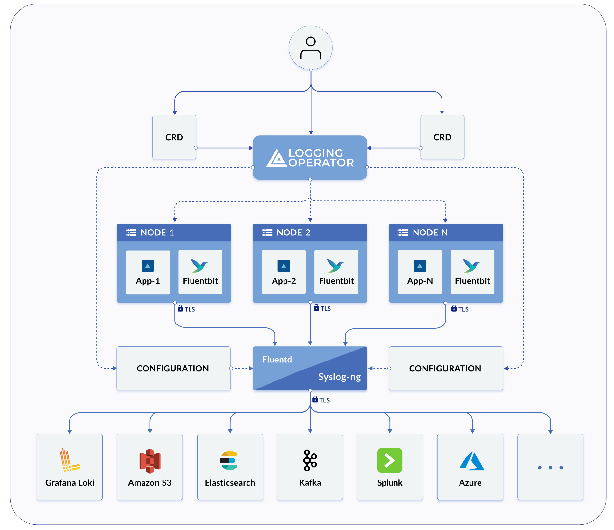
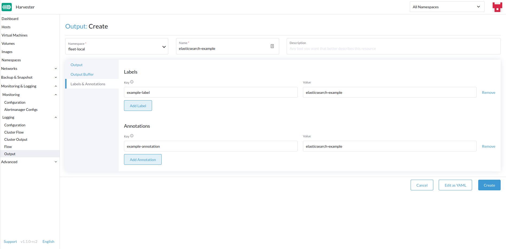
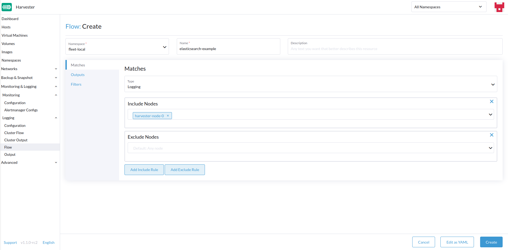
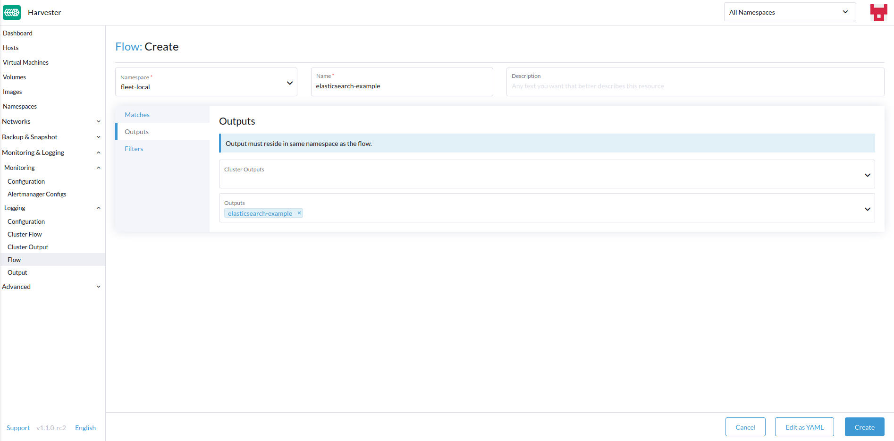
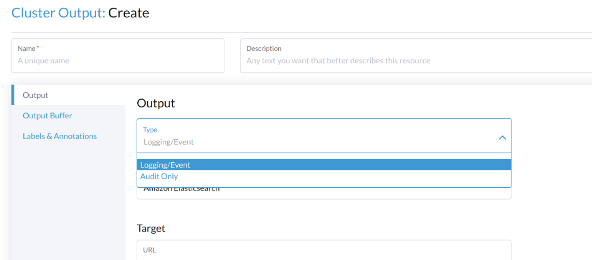

Registro
Es importante saber qué está sucediendo/ha sucedido en el Harvester Cluster.
Harvester recoge el cluster running log, el audit de kubernetes y el event justo después de que el clúster se enciende, lo cual es útil para la monitorización, el registro, la auditoría y la resolución de problemas.
Harvester admite el envío de esos registros a varios tipos de servidores de registro.
|
El tamaño de los datos de registro está relacionado con la escala del clúster, la carga de trabajo y otros factores. |
La función de registro ahora se implementa con un complemento y está desactivada por defecto en nuevas instalaciones.
Los usuarios pueden habilitar/deshabilitar el rancher-logging complemento desde la interfaz de usuario de Harvester después de la instalación.
Los usuarios también pueden habilitar/deshabilitar el rancher-logging complemento en su instalación de Harvester personalizando el archivo de configuración.
Para los clústeres de Harvester actualizados desde la versión v1.1.x, la función de registro se convierte automáticamente en un complemento y se mantiene habilitada como antes.
Arquitectura de alto nivel
Tanto Harvester como Rancher utilizan el Operador de Registro para gestionar componentes y operaciones específicas de la infraestructura de registro interna.

En la práctica de Harvester, el Logging, Audit y Event comparten una arquitectura, el Logging es la infraestructura, mientras que el Audit y Event están por encima de ella.
Registro
La infraestructura de registro de Harvester te permite agregar registros de Harvester en un servicio externo como Graylog, Elasticsearch, Splunk, Grafana Loki y otros.
Registros Recogidos
Consulta a continuación una lista de registros que se recogen:
-
Registros de todo el clúster
Pods -
Registros del núcleo de Linux de cada
node -
Registros de servicios systemd seleccionados de cada nodo
-
rke2-server -
rke2-agent -
rancherd -
rancher-system-agent -
NetworkManager -
iscsid
-
|
Los usuarios pueden configurar y modificar a dónde se envían los registros agregados, así como algunos filtros básicos. No se admite cambiar qué registros se recopilan. |
Configurando Recursos de Registro
Debajo del Operador de Registro están Fluentd y Fluent Bit, que manejan la recopilación y el enrutamiento de registros. Si lo deseas, puedes modificar cuántos recursos se dedican a esos componentes.
Desde la interfaz de usuario
-
Ve a la página Avanzado > Complementos y selecciona el complemento rancher-logging.
-
Desde la pestaña Fluentbit, cambia las solicitudes y límites de recursos.
-
Desde la pestaña Fluentd, cambia las solicitudes y límites de recursos.
-
Selecciona Guardar cuando termines de configurar los ajustes para el complemento rancher-logging.

|
La configuración de la interfaz de usuario solo es visible cuando el complemento rancher-logging está habilitado. |
Desde la línea de comandos
Puedes usar el siguiente kubectl comando para cambiar las configuraciones de recursos para el complemento rancher-logging: kubectl edit addons.harvesterhci.io -n cattle-logging-system rancher-logging.
La ruta de recursos y los valores predeterminados son los siguientes.
apiVersion: harvesterhci.io/v1beta1
kind: Addon
metadata:
name: rancher-logging
namespace: cattle-logging-system
spec:
valuesContent: |
fluentbit:
resources:
limits:
cpu: 200m
memory: 200Mi
requests:
cpu: 50m
memory: 50Mi
fluentd:
resources:
limits:
cpu: 1000m
memory: 800Mi
requests:
cpu: 100m
memory: 200Mi
|
Aún puedes hacer ajustes de configuración cuando el complemento está deshabilitado. Sin embargo, estos cambios solo tienen efecto cuando vuelves a habilitar el complemento. |
Verificación de Recursos Colgantes
Al habilitar el complemento rancher-logging, puedes encontrar el siguiente error:
También puedes observar que las ampliaciones relacionadas con el complemento no se han desplegado completamente.
Para evitar que el error vuelva a ocurrir, realiza las siguientes acciones antes de habilitar el complemento:
-
Actualiza o elimina los recursos colgantes afectados.
-
Añade la anotación
harvesterhci.io/skipRancherLoggingAddonWebhookCheck: "true"al complemento.
Configuración de destinos de registro
Las operaciones de registro están respaldadas por el Operador de Registro y se controlan utilizando recursos de Fluentd, particularmente Flow y ClusterFlow y Output y ClusterOutput. Puedes enrutar y filtrar registros aplicando estos CRDs al clúster de Harvester.
Al aplicar nuevos Outputs y Flows al clúster, puede tardar un tiempo en que el operador de registro los aplique efectivamente. Así que, por favor, permite unos minutos para que los registros empiecen a fluir.
Agrupado vs con espacio de nombres
Una cosa importante a entender al enrutar registros es la diferencia entre ClusterFlow vs Flow y ClusterOutput vs Output. La principal diferencia entre la versión agrupada y la no agrupada de cada uno es que las versiones no agrupadas están en un espacio de nombres.
La mayor implicación de esto es que Flows solo puede acceder a Outputs que están dentro del mismo espacio de nombres, pero aún puede acceder a cualquier ClusterOutput.
Para obtener más información, consulta la documentación:
Desde la interfaz de usuario
|
Las imágenes de la interfaz de usuario son para |
Creando Salidas
-
Elige la opción para crear un nuevo
OutputoClusterOutput. -
Si creas un
Output, selecciona el espacio de nombres deseado. -
Añade un nombre para los recursos.
-
Selecciona el tipo de registro.
-
Selecciona el tipo de salida de registro.

-
Configura el búfer de salida si es necesario.

-
Añade cualquier etiqueta o anotación.

-
Una vez hecho, haz clic en
Createen la parte inferior derecha.
|
Dependiendo de la salida seleccionada (Splunk, Elasticsearch, etc.), habrá campos adicionales que especificar en el formulario. |
Salida
El formulario muestra los campos disponibles para el output seleccionado.
Búfer de salida
El editor te permite describir el comportamiento preferido del búfer de salida utilizando varios campos.
Creando flujos
-
Elige la opción para crear un nuevo
FlowoClusterFlow. -
Si creas un
Flow, selecciona el espacio de nombres deseado. -
Añade un nombre para el recurso.
-
Selecciona cualquier nodo cuyos registros incluir o excluir.

-
Selecciona el
Outputsy elClusterOutputsde destino.
-
Añade cualquier filtro si lo deseas.

-
Una vez hecho, haz clic en
Createen la parte inferior izquierda.
Coincide
Las coincidencias te permiten filtrar qué registros deseas incluir en el Flow. El formulario solo te permite incluir o excluir registros de nodos, pero si es necesario, puedes añadir otras reglas de coincidencia soportadas por el recurso seleccionando Edit as YAML.
Para más información sobre la directiva de coincidencia, consulta Match statement.
Salidas
Las salidas te permiten seleccionar uno o más OutputRefs para enviar los registros agregados a. Al crear o editar un Flow / ClusterFlow, es necesario que el usuario seleccione al menos un Output.
|
Debe haber al menos un |
Filtros
Los filtros te permiten transformar, procesar y mutar los registros. Para más información, consulta la lista de filtros soportados.
Desde la línea de comandos
Para configurar rutas de registro a través de la línea de comandos, solo necesitas definir los archivos YAML para los recursos relevantes:
# elasticsearch-logging.yaml
apiVersion: logging.banzaicloud.io/v1beta1
kind: Output
metadata:
name: elasticsearch-example
namespace: fleet-local
labels:
example-label: elasticsearch-example
annotations:
example-annotation: elasticsearch-example
spec:
elasticsearch:
host: <url-to-elasticsearch-server>
port: 9200
---
apiVersion: logging.banzaicloud.io/v1beta1
kind: Flow
metadata:
name: elasticsearch-example
namespace: fleet-local
spec:
match:
- select: {}
globalOutputRefs:
- elasticsearch-exampleY luego aplicarlos:
kubectl apply -f elasticsearch-logging.yamlReferenciando Secretos
Puedes definir valores secretos (en formato YAML) utilizando cualquiera de los siguientes métodos:
El más sencillo es usar la clave value, que es un valor de cadena simple para el secreto deseado. Este método solo debe usarse para pruebas y nunca en producción:
aws_key_id:
value: "secretvalue"El siguiente es usar valueFrom, que permite referenciar un valor específico de un secreto por un par de nombre y clave:
aws_key_id:
valueFrom:
secretKeyRef:
name: <kubernetes-secret-name>
key: <kubernetes-secret-key>Algunos plugins requieren un archivo del que leer en lugar de simplemente recibir un valor del secreto (esto es a menudo el caso para archivos de certificados CA). En estos casos, necesitas usar mountFrom, que montará el secreto como un archivo en la ampliación subyacente de fluentd y apuntará el plugin al archivo. Los objetos valueFrom y mountFrom se ven iguales:
tls_cert_path:
mountFrom:
secretKeyRef:
name: <kubernetes-secret-name>
key: <kubernetes-secret-key>Para más información, consulta Definición de secreto.
Ejemplo Outputs
-
Elasticsearch
-
Graylog
-
Splunk
-
Loki
Para el despliegue más sencillo, puedes desplegar Elasticsearch en tu sistema local usando docker:
sudo docker run --name elasticsearch -p 9200:9200 -p 9300:9300 -e xpack.security.enabled=false -e node.name=es01 -e discovery.type=single-node -it docker.elastic.co/elasticsearch/elasticsearch:8.16.6|
Para usar Elasticsearch con SUSE Virtualization v1.5.0, asegúrate de que el servidor de Elasticsearch esté ejecutando la versión 8.11.0 o posterior. Debes actualizar la versión de Elasticsearch cuando el pod |
Asegúrate de que has configurado vm.max_map_count para que sea >= 262144 o el comando de docker anterior fallará. Una vez que el servidor de Elasticsearch esté en funcionamiento, puedes crear el archivo yaml para el ClusterOutput y ClusterFlow:
cat << EOF > elasticsearch-example.yaml
apiVersion: logging.banzaicloud.io/v1beta1
kind: ClusterOutput
metadata:
name: elasticsearch-example
namespace: cattle-logging-system
spec:
elasticsearch:
host: 192.168.0.119
port: 9200
buffer:
timekey: 1m
timekey_wait: 30s
timekey_use_utc: true
---
apiVersion: logging.banzaicloud.io/v1beta1
kind: ClusterFlow
metadata:
name: elasticsearch-example
namespace: cattle-logging-system
spec:
match:
- select: {}
globalOutputRefs:
- elasticsearch-example
EOFY aplica el archivo:
kubectl apply -f elasticsearch-example.yamlDespués de permitir un tiempo para que el operador de logging aplique los recursos, puedes probar que los logs están fluyendo:
$ curl localhost:9200/fluentd/_search
{
"took": 1,
"timed_out": false,
"_shards": {
"total": 5,
"successful": 5,
"skipped": 0,
"failed": 0
},
"hits": {
"total": 11603,
"max_score": 1,
"hits": [
{
"_index": "fluentd",
"_type": "fluentd",
"_id": "yWHr0oMBXcBggZRJgagY",
"_score": 1,
"_source": {
"stream": "stderr",
"logtag": "F",
"message": "I1013 02:29:43.020384 1 csi_handler.go:248] Attaching \"csi-974b4a6d2598d8a7a37b06d06557c428628875e077dabf8f32a6f3aa2750961d\"",
"kubernetes": {
"pod_name": "csi-attacher-5d4cc8cfc8-hd4nb",
"namespace_name": "longhorn-system",
"pod_id": "c63c2014-9556-40ce-a8e1-22c55de12e70",
"labels": {
"app": "csi-attacher",
"pod-template-hash": "5d4cc8cfc8"
},
"annotations": {
"cni.projectcalico.org/containerID": "857df09c8ede7b8dee786a8c8788e8465cca58f0b4d973c448ed25bef62660cf",
"cni.projectcalico.org/podIP": "10.52.0.15/32",
"cni.projectcalico.org/podIPs": "10.52.0.15/32",
"k8s.v1.cni.cncf.io/network-status": "[{\n \"name\": \"k8s-pod-network\",\n \"ips\": [\n \"10.52.0.15\"\n ],\n \"default\": true,\n \"dns\": {}\n}]",
"k8s.v1.cni.cncf.io/networks-status": "[{\n \"name\": \"k8s-pod-network\",\n \"ips\": [\n \"10.52.0.15\"\n ],\n \"default\": true,\n \"dns\": {}\n}]",
"kubernetes.io/psp": "global-unrestricted-psp"
},
"host": "harvester-node-0",
"container_name": "csi-attacher",
"docker_id": "f10e4449492d4191376d3e84e39742bf077ff696acbb1e5f87c9cfbab434edae",
"container_hash": "sha256:03e115718d258479ce19feeb9635215f98e5ad1475667b4395b79e68caf129a6",
"container_image": "docker.io/longhornio/csi-attacher:v3.4.0"
}
}
},
...
]
}
}apiVersion: logging.banzaicloud.io/v1beta1
kind: ClusterFlow
metadata:
name: "all-logs-gelf-hs"
namespace: "cattle-logging-system"
spec:
globalOutputRefs:
- "example-gelf-hs"
---
apiVersion: logging.banzaicloud.io/v1beta1
kind: ClusterOutput
metadata:
name: "example-gelf-hs"
namespace: "cattle-logging-system"
spec:
gelf:
host: "192.168.122.159"
port: 12202
protocol: "udp"apiVersion: logging.banzaicloud.io/v1beta1
kind: ClusterOutput
metadata:
name: harvester-logging-splunk
namespace: cattle-logging-system
spec:
splunkHec:
hec_host: 192.168.122.101
hec_port: 8088
insecure_ssl: true
index: harvester-log-index
hec_token:
valueFrom:
secretKeyRef:
key: HECTOKEN
name: splunk-hec-token2
buffer:
chunk_limit_size: 3MB
timekey: 2m
timekey_wait: 1m
---
apiVersion: logging.banzaicloud.io/v1beta1
kind: ClusterFlow
metadata:
name: harvester-logging-splunk
namespace: cattle-logging-system
spec:
filters:
- tag_normaliser: {}
match:
globalOutputRefs:
- harvester-logging-splunkPuedes seguir las instrucciones en el logging HEP sobre cómo desplegar y ver los logs del clúster a través de Grafana Loki.
apiVersion: logging.banzaicloud.io/v1beta1
kind: ClusterFlow
metadata:
name: harvester-loki
namespace: cattle-logging-system
spec:
match:
- select: {}
globalOutputRefs:
- harvester-loki
---
apiVersion: logging.banzaicloud.io/v1beta1
kind: ClusterOutput
metadata:
name: harvester-loki
namespace: cattle-logging-system
spec:
loki:
url: http://loki-stack.cattle-logging-system.svc:3100
extra_labels:
logOutput: harvester-lokiAudit
Harvester recoge audit de Kubernetes y es capaz de enviar el audit a varios tipos de servidores de logs.
El archivo de directiva para guiar kube-apiserver es aquí.
Definición de Auditoría
En kubernetes, los datos de auditoría son generados por kube-apiserver de acuerdo con la directiva definida.
... Audit policy Audit policy defines rules about what events should be recorded and what data they should include. The audit policy object structure is defined in the audit.k8s.io API group. When an event is processed, it's compared against the list of rules in order. The first matching rule sets the audit level of the event. The defined audit levels are: None - don't log events that match this rule. Metadata - log request metadata (requesting user, timestamp, resource, verb, etc.) but not request or response body. Request - log event metadata and request body but not response body. This does not apply for non-resource requests. RequestResponse - log event metadata, request and response bodies. This does not apply for non-resource requests.
Formato de Log de Auditoría
Formato de Log de Auditoría en Kubernetes
El apiserver de Kubernetes registra auditorías con el siguiente formato JSON en un archivo local.
{
"kind":"Event",
"apiVersion":"audit.k8s.io/v1",
"level":"Metadata",
"auditID":"13d0bf83-7249-417b-b386-d7fc7c024583",
"stage":"RequestReceived",
"requestURI":"/apis/flowcontrol.apiserver.k8s.io/v1beta2/prioritylevelconfigurations?fieldManager=api-priority-and-fairness-config-producer-v1",
"verb":"create",
"user":{"username":"system:apiserver","uid":"d311c1fe-2d96-4e54-a01b-5203936e1046","groups":["system:masters"]},
"sourceIPs":["::1"],
"userAgent":"kube-apiserver/v1.24.7+rke2r1 (linux/amd64) kubernetes/e6f3597",
"objectRef":{"resource":"prioritylevelconfigurations",
"apiGroup":"flowcontrol.apiserver.k8s.io",
"apiVersion":"v1beta2"},
"requestReceivedTimestamp":"2022-10-19T18:55:07.244781Z",
"stageTimestamp":"2022-10-19T18:55:07.244781Z"
}Salida de Log de Auditoría/Salida de Clúster
Para generar un registro de auditoría relacionado, el Output/ClusterOutput requiere que el valor de loggingRef sea harvester-kube-audit-log-ref.
Cuando configuras desde el panel de control de Harvester, el campo se añade automáticamente.
Selecciona el tipo Audit Only de la lista desplegable Type.

Cuando configuras desde la CLI, por favor añade el campo manualmente.
Ejemplo:
apiVersion: logging.banzaicloud.io/v1beta1
kind: ClusterOutput
metadata:
name: "harvester-audit-webhook"
namespace: "cattle-logging-system"
spec:
http:
endpoint: "http://192.168.122.159:8096/"
open_timeout: 3
format:
type: "json"
buffer:
chunk_limit_size: 3MB
timekey: 2m
timekey_wait: 1m
loggingRef: harvester-kube-audit-log-ref # this reference is fixed and must be here
Flujo de Registro de Auditoría/Flujo de Clúster
Para enrutar registros de auditoría relacionados, el Flow/ClusterFlow requiere que el valor de loggingRef sea harvester-kube-audit-log-ref.
Cuando configuras desde el panel de control de Harvester, el campo se añade automáticamente.
Selecciona el tipo Audit.

Cuando configuras desde la CLI, por favor añade el campo manualmente.
Ejemplo:
apiVersion: logging.banzaicloud.io/v1beta1
kind: ClusterFlow
metadata:
name: "harvester-audit-webhook"
namespace: "cattle-logging-system"
spec:
globalOutputRefs:
- "harvester-audit-webhook"
loggingRef: harvester-kube-audit-log-ref # this reference is fixed and must be here
Acontecimiento
Harvester recoge event de Kubernetes y es capaz de enviar el event a varios tipos de servidores de logs.
Definición de Evento
Los events de Kubernetes son objetos que te muestran lo que está sucediendo dentro de un clúster, como qué decisiones tomó el planificador o por qué algunos pods fueron expulsados del nodo. Todos los componentes centrales y extensiones (operadores/controladores) pueden crear eventos a través del API Server.
Los eventos no tienen relación directa con los mensajes de registro generados por los diversos componentes, y no se ven afectados por el nivel de verbosidad del registro. Cuando un componente crea un evento, a menudo emite un mensaje de registro correspondiente. Los eventos son eliminados de forma automática por el API Server tras un breve periodo (típicamente una hora), lo que significa que pueden utilizarse para entender los problemas que están ocurriendo, pero debes recopilarlos para investigar eventos pasados.
Los eventos son lo primero que debes revisar para la aplicación, así como para las operaciones de infraestructura cuando algo no está funcionando como se esperaba. Mantenerlos durante un periodo más largo es esencial si el fallo es el resultado de eventos anteriores, o al realizar un análisis post-mortem.
Formato de Registro de Eventos
Formato de Registro de Eventos en Kubernetes
Un ejemplo de kubernetes event:
{
"apiVersion": "v1",
"count": 1,
"eventTime": null,
"firstTimestamp": "2022-08-24T11:17:35Z",
"involvedObject": {
"apiVersion": "kubevirt.io/v1",
"kind": "VirtualMachineInstance",
"name": "vm-ide-1",
"namespace": "default",
"resourceVersion": "604601",
"uid": "1bd4133f-5aa3-4eda-bd26-3193b255b480"
},
"kind": "Event",
"lastTimestamp": "2022-08-24T11:17:35Z",
"message": "VirtualMachineInstance defined.",
"metadata": {
"creationTimestamp": "2022-08-24T11:17:35Z",
"name": "vm-ide-1.170e43cbdd833b62",
"namespace": "default",
"resourceVersion": "604626",
"uid": "0114f4e7-1d4a-4201-b0e5-8cc8ede202f4"
},
"reason": "Created",
"reportingComponent": "",
"reportingInstance": "",
"source": {
"component": "virt-handler",
"host": "harv1"
},
"type": "Normal"
},
Formato de registro de eventos antes de ser enviado a los servidores de registro
Cada event log tiene el formato de: {"stream":"","logtag":"F","message":"","kubernetes":{""}}. El kubernetes event está en el campo message.
{
"stream":"stdout",
"logtag":"F",
"message":"{
\\"verb\\":\\"ADDED\\",
\\"event\\":{\\"metadata\\":{\\"name\\":\\"vm-ide-1.170e446c3f890433\\",\\"namespace\\":\\"default\\",\\"uid\\":\\"0b44b6c7-b415-4034-95e5-a476fcec547f\\",\\"resourceVersion\\":\\"612482\\",\\"creationTimestamp\\":\\"2022-08-24T11:29:04Z\\",\\"managedFields\\":[{\\"manager\\":\\"virt-controller\\",\\"operation\\":\\"Update\\",\\"apiVersion\\":\\"v1\\",\\"time\\":\\"2022-08-24T11:29:04Z\\"}]},\\"involvedObject\\":{\\"kind\\":\\"VirtualMachineInstance\\",\\"namespace\\":\\"default\\",\\"name\\":\\"vm-ide-1\\",\\"uid\\":\\"1bd4133f-5aa3-4eda-bd26-3193b255b480\\",\\"apiVersion\\":\\"kubevirt.io/v1\\",\\"resourceVersion\\":\\"612477\\"},\\"reason\\":\\"SuccessfulDelete\\",\\"message\\":\\"Deleted PodDisruptionBudget kubevirt-disruption-budget-hmmgd\\",\\"source\\":{\\"component\\":\\"disruptionbudget-controller\\"},\\"firstTimestamp\\":\\"2022-08-24T11:29:04Z\\",\\"lastTimestamp\\":\\"2022-08-24T11:29:04Z\\",\\"count\\":1,\\"type\\":\\"Normal\\",\\"eventTime\\":null,\\"reportingComponent\\":\\"\\",\\"reportingInstance\\":\\"\\"}
}",
"kubernetes":{"pod_name":"harvester-default-event-tailer-0","namespace_name":"cattle-logging-system","pod_id":"d3453153-58c9-456e-b3c3-d91242580df3","labels":{"app.kubernetes.io/instance":"harvester-default-event-tailer","app.kubernetes.io/name":"event-tailer","controller-revision-hash":"harvester-default-event-tailer-747b9d4489","statefulset.kubernetes.io/pod-name":"harvester-default-event-tailer-0"},"annotations":{"cni.projectcalico.org/containerID":"aa72487922ceb4420ebdefb14a81f0d53029b3aec46ed71a8875ef288cde4103","cni.projectcalico.org/podIP":"10.52.0.178/32","cni.projectcalico.org/podIPs":"10.52.0.178/32","k8s.v1.cni.cncf.io/network-status":"[{\\n \\"name\\": \\"k8s-pod-network\\",\\n \\"ips\\": [\\n \\"10.52.0.178\\"\\n ],\\n \\"default\\": true,\\n \\"dns\\": {}\\n}]","k8s.v1.cni.cncf.io/networks-status":"[{\\n \\"name\\": \\"k8s-pod-network\\",\\n \\"ips\\": [\\n \\"10.52.0.178\\"\\n ],\\n \\"default\\": true,\\n \\"dns\\": {}\\n}]","kubernetes.io/psp":"global-unrestricted-psp"},"host":"harv1","container_name":"harvester-default-event-tailer-0","docker_id":"455064de50cc4f66e3dd46c074a1e4e6cfd9139cb74d40f5ba00b4e3e2a7ab2d","container_hash":"docker.io/banzaicloud/eventrouter@sha256:6353d3f961a368d95583758fa05e8f4c0801881c39ed695bd4e8283d373a4262","container_image":"docker.io/banzaicloud/eventrouter:v0.1.0"}
}
Salida del Registro de Eventos/Salida del Clúster
Los eventos comparten el Output/ClusterOutput con Logging.
Seleccione Logging/Event de la lista desplegable Type.
Flujo del Registro de Eventos/Flujo del Clúster
Comparado con el registro normal Flow/ClusterFlow, el Event relacionado Flow/ClusterFlow, tiene un campo de coincidencia adicional con el valor de event-tailer.
Cuando configuras desde el panel de control de Harvester, el campo se añade automáticamente.
Seleccione Event de la lista desplegable Type.
Cuando configuras desde la CLI, por favor añade el campo manualmente.
Ejemplo:
apiVersion: logging.banzaicloud.io/v1beta1
kind: ClusterFlow
metadata:
name: harvester-event-webhook
namespace: cattle-logging-system
spec:
filters:
- tag_normaliser: {}
match:
- select:
labels:
app.kubernetes.io/name: event-tailer
globalOutputRefs:
- harvester-event-webhook